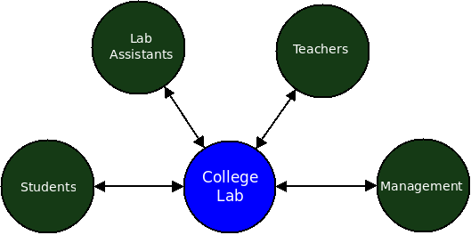

Spreading Freedom in College Labs
-Vignesh Prabhu
FSMK Volunteer
Plan for today
- Rant about current College Lab Implementation
- FSMK Lab Manual as the first step towards its solution
- Our successes and limitations
- Our dreams
Lab assignments presently!
Want more fun!!!
Search for How are students in Indian colleges taught programming*
'No experiments in Lab'
- Fixed set of programs as syllabus
- Solutions are already shared
- Ultimately students dont learn anything
Stakeholders of a college lab

FSMK's Lab Manual - Motivation
- Reach out to large number of audience
- Prove that Lab using Free Software is possible
- Build a community around free software amongst the college authorities
Docathon 2014
- 23rd to 25th Jan 2014
- Organized at Jnana Vikas Institute of Technology, Bidadi
- Sponsored by Spoken Tutorials Project
- 60 participants - 15 Faculty members, 40 students, 5 FSMK members
Keys Points
- Completely focussed on prescribed syllabus
- Contains problem statement, solution, algorithm, explanation
- Instant ready to use
- Released under CC License
- Uses only Free Software
Ripple Effect
- Free for any college to adopt
- Reach to a wide audience (around 10,000 per year just in CSE Department)
- Platform for faculty from different colleges to interact with each other
- Platform for students to get involved, contribute and get recognized
- "Free Software based Labs" is no more just a concept
Ripple Effect - Android App
Testimonials
"Finding a comprehensive guide to help you with your lab studies isn't easy, and FSMK has done a wonder in this regard! The documentation is accurate; and the best part is, if you ever find a mistake, you can rectify it yourself because it's open sourced and free."
Testimonials
"With this lab manual FSMK has been able to break the myth and the perceived mind barrier in the academic community students and faculty alike, that 'conducting labs entirely using free software is not possible'. Unlike any other lab manual which only provides solutions to exercises this manual has been carefully designed to also include explanations of solutions, installation procedures for various tools being used."
Testimonials
"Today the Department of Computer Science and Engineering of Oxford College of Engineering is proud to say that none of their systems make use of Windows/proprietary software and they have all successfully and enthusiastically moved over to FOSS as the only operating system in use. if you ever find a mistake, you can rectify it yourself because it's open sourced and free."
Spoken Tutorial + Lab Manual
Show me the numbers?
- Partially adopted in 4 colleges, PESCE(Mandya), GEC(Hassan), TOCE, JVIT
- Actively used by students
- Android app has 500-1000 downloads
So why no Free Software Lab everywhere?
- Adoption in college is slow
- Lack of dedicated team pushing it forward full time
- Lack of structured support for colleges
- Fear of 'External Examiner'
Our dreams for the future
- Migrate content to Latex to get better print ready version
- Collaborate with new Colleges/Universities Ex: Christ University, SIT Tumkur
- Promote "Free Software Labs"
- Faculty Development Programs